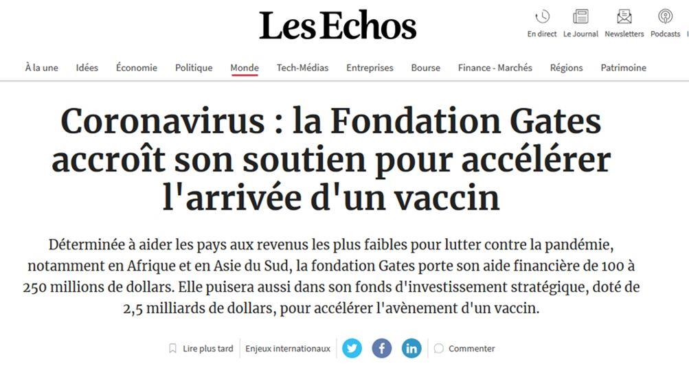
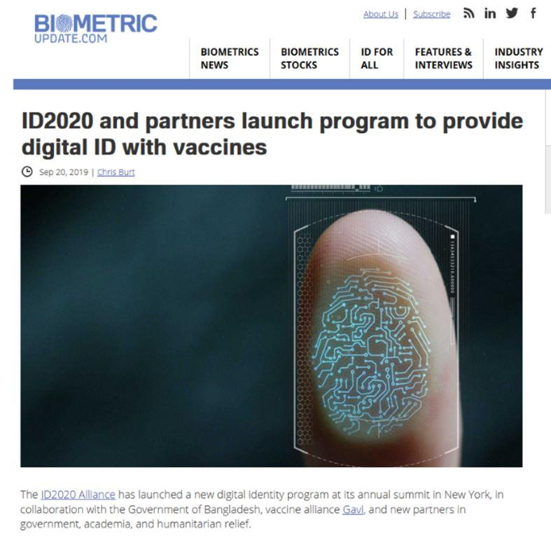
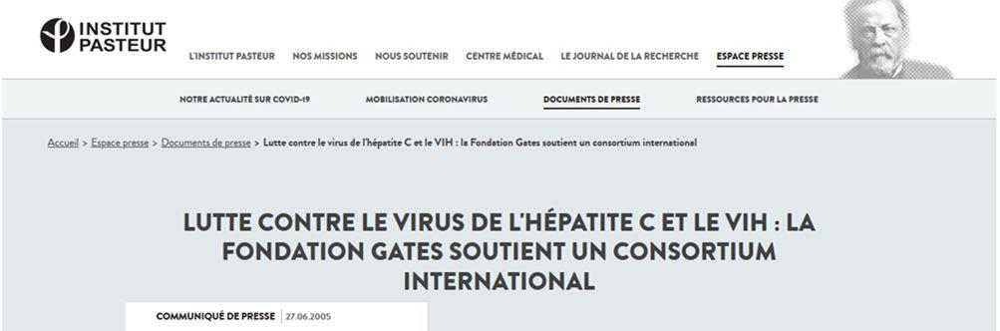

Depuis le début de la pandémie, Bill Gates finance abondement les recherches d’un vaccin pour contrer le coronavirus.
Mais cet Américain, fondateur et ancien PDG de Microsoft, longtemps l’homme le plus riche du monde, est un personnage trouble :
Curieusement, cela fait 5 ans qu’il prévoit l’arrivée d’une pandémie1 …
À lui seul, il contribue à près de 7% du budget total de l’Organisation Mondiale de la Santé (OMS)2.
L’OMS n’a pas prévenu assez vite de la dangerosité du coronavirus. Pire, elle a accéléré la pandémie, en dénonçant les pays qui voulaient fermer leurs frontières à la Chine3.
Étrange quand on connaît les rapports étroits entre Bill Gates et Tedros Adhanom Gebreyesus, directeur général de l’OMS et ancien ministre de la santé en Éthiopie, comme en atteste un projet de la célèbre université de Yale4.
Bill Gates finance 7 vaccins pour vaincre le coronavirus 5 ! Il a investi 250 millions de dollars, et puise une partie dans son fonds de 2,5 milliards de dollars6 !
Pourquoi une si exubérante philanthropie ?
Prêt à être pucé comme les chiens ?
C'est peut-être que ce vaccin s’accompagnera d’un dispositif de puçage du vacciné.
Oui, de PUÇAGE, comme les chiens!
Le projet est une collaboration tout ce qu’il y a de plus officielle de la fondation de Bill Gates et du MIT7.
Enfin… Bill Gates ne l’appelle pas ainsi.
C’est un « nano-tatouage », preuve de votre vaccination, qui sera indispensable à l’obtention d’un passeport, lequel vous décrira sous toutes les coutures, jusqu’au moindre détail de l’iris.
Près de 3000 réfugiés en Thaïlande, auraient au moins « bénéficié » de ce dispositif 8et 9.
Il va sans dire que si la France adopte ces systèmes, vous faire pucer pourrait devenir obligatoire - et si on vous laisse le choix, vous risquez de devenir un vrai paria si vous n’acceptez pas que le gouvernement sache à tout instant ce que vous faites.
Le Danemark a rendu les vaccins obligatoires
Autre fait bien étrange, celui du vote du Danemark pour faire vacciner de force ses citoyens, alors qu’il n’y avait pas encore l’ombre d’un vaccin, en ce 13 mars, jour du vote.
Il s’en est fallu de peu que la police acquiert le droit de rentrer chez les gens sur simple suspicion de Covid19.
Vous trouvez cette information qui paraît folle dans le Local, un site d’actualités en ligne 10.
Il faut dire que la fondation Bill et Melinda Gates est très proche du Danemark.
En partenariat avec l’université de Copenhague, celle du Danemark du sud et la Maternity Foundation, la Fondation Gates finance une application numérique bien spéciale.
Celle-ci a pour vocation de guider les mères des pays pauvres, pour leur fournir des gestes utiles… mais aussi des listes de médicaments à acheter, et des instructions compatibles avec les recommandations de l’OMS11.
Quel type de vaccin conseilleront-ils, sinon celui de Mr Gates ?
Vacciner pour contrôler la population
L’introduction d’une puce dans le corps humain donne un pouvoir démesuré à celui qui l’installe, en termes de surveillance et même de modification chimique du corps.
Si cette technologie venait à être couplée à celle des nanorobots de la taille de cellules, comme celles que fabrique le MIT 12, partenaire institutionnel de Mr Gates, les possibilités de nuisance seraient infinies.
A ce titre, il est important de savoir que le premier nanorobot a été construit déjà il y a dix ans13, et le graal que les chercheurs en nanoscience veulent atteindre, est le nanorobot auto-réplicateur, qui agirait en fin de compte comme un virus14.
Or comme le veut l’adage de lord Acton, le pouvoir rend fou, et un pouvoir absolu rend absolument fou.
Le tatouage de Bill Gates, c’est ça :
Mais moi, je vois ça : ce sont les tatouages des camps de concentration.
Emmanuel Macron nous a dit dans son discours qu’il attendait un vaccin, serait-ce celui de Bill Gates ? Bill Gates à la conquête de la France ?
Ce ne serait clairement pas la première collaboration de Bill Gates avec l’institut Pasteur, car on en compte au moins 3 précédentes15.
En tout cas, la dangereuse accumulation du pouvoir entre ses mains, et l’impossibilité qu’ont les Français de protester dans l’espace public à cause du confinement, lui donne la possibilité de le faire sans la moindre opposition.
Cette pétition n’a rien de drôle. Vous pensez peut-être que tout ça est de la science-fiction. Et sincèrement, je préférerais que ça le soit.
Les Américains, eux, prennent ça très au sérieux. Ils ont déposé une pétition au parlement américain qui demande à ce qu’une enquête soit faite sur Bill Gates16.
Le nombre de pétitionnaires requis a été atteint.
Cette pétition trouve suspect que le coronavirus se soit produit inopinément en Chine, suite aux Jeux militaires mondiaux du mois d’octobre, et… à une simulation organisée à New York par la fondation de Mr Gates, concernant un coronavirus, l’évènement 201.
Le journal Le Monde, qui cherche à nier le lien entre Bill Gates et l’apparition du coronavirus17, ne trouve rien d’autre à répondre que :
Les intentions de la fondation sont bonnes. La simulation a pris pour exemple une exploitation agricole au Brésil. Les résultats de la simulation ne concordent pas avec la réalité !
La pétition pointe aussi le fait que depuis qu’a commencé l’épidémie de Coronavirus, jamais autant de données n’ont été récoltées à l’insu des citoyens.
Elle souligne le fait que Bill Gates, l’OMS et l’UNICEF ont été accusés « de manière crédible » d’avoir essayé de stériliser des enfants kenyans, ce qui a en effet été relevé par des médias indépendants18.
D’autant que Bill Gates avait dit quelque temps avant, qu'il était possible de réduire la croissance de la population africaine de 10 à 15% « en allongeant la durée de vie »19.
Enfin, c’est écrit noir sur blanc : un partenariat entre Microsoft, les Nations Unies et d’autres acteurs puissants, nommé ID2020, a pour but « altruiste » avoué de donner une identité indélébile à 1,1 milliards de personnes « qui en ont le plus grand besoin »20.
On devine que ce sera rapidement indispensable pour tout le monde…
Et on se demande pourquoi le terme de pandémie, qui correspond à une mortalité de 12% des malades, a été attribué par l’OMS au coronavirus qui tue moins de 3 % des personnes touchées21, déclenchant ainsi le confinement planétaire d’un individu sur deux.
Tout ceci est affolant. C’est pourquoi je vous demande, s’il vous plaît, de partager cet article autant que possible. Discutez-en autour de vous. Le pire serait que nous soyons pris au dépourvu.
Partager cette page